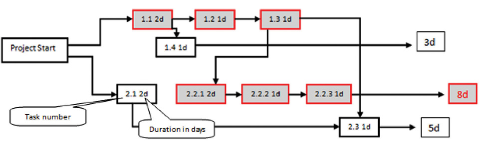
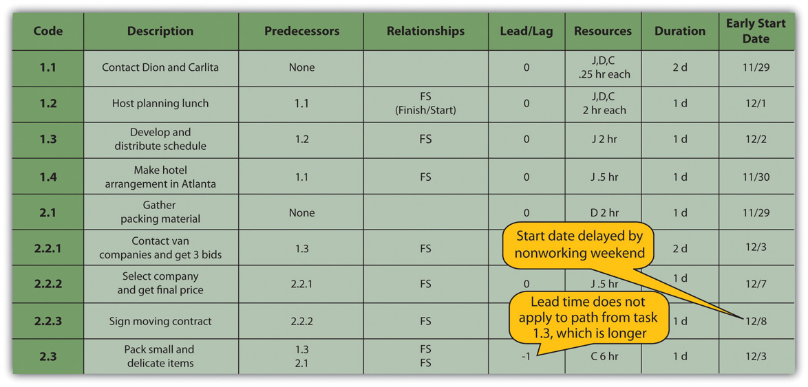

The critical pathSequence of activities through the network that results in the latest completion date of the project. is the path through the network that results in the latest completion date of the project.
If any activity on the critical path is delayed, the completion of the project will be delayed by an equal amount. It is the path with the greatest total duration. To determine the critical path, add the amount of time estimated for the duration of each activity to the previous activity to determine which path through the network has the longest total duration, as shown in Figure 8.15 "Critical Path". Durations are indicated in days. The critical path through these tasks takes at least eight days. Activities on the critical path are shaded.
Figure 8.15 Critical Path
Starting dates can be assigned to each activity by doing a forward passThe process of determining the earliest starting date for each activity by beginning at the project start date and adding the activity durations, resulting with the early finish date for the project. proceeding from left to right in the network diagram beginning with the project start date. The dates derived by this method are the early start (ES) datesThe soonest date an activity can begin determined by the project start date and the durations of its predecessor activities.. The early start date for an activity is the earliest date the activity can begin. The estimate considers durations and resource availability calendars. To calculate early start dates, begin with the project start date and assign that date as the start date of activities that have no predecessor activities. Follow these steps to calculate the early start dates of subsequent activities, assuming finish-start relationships:
John begins planning his move to Atlanta the same day he accepts the job. The start date in this example is Monday, November 29, 2010. Tasks 1.1 and 2.1 can both start on that day, so the early start dates for tasks 1.1 and 2.1 are November 29. John calculates the early start date for the activities. A partial list is provided below. Compare the figure below and the figure in the next sidebar. Observe that John is willing to work on weekends, but activity 2.2.3 is delayed by two days because one of the moving companies did not provide bids on the weekend. Observe that activity 2.3 has a lead time of one day, but that relationship is between activity 2.1 and 2.3. The network path from activity 1.3 is longer, so the lead time with activity 2.1 is not considered in calculating the early start date of 2.3.
Figure 8.16 Early Start Dates Determined by a Forward Pass
Doing this process manually is error prone and time consuming. Fortunately, there are computer programs to assist in the process, but the project manager must understand the process well enough to recognize computer errors. Computer software must be combined with common sense or good judgment.
FloatThe amount of time an activity can be delayed from an early start without delaying the completion date., sometimes called slack, is the amount of time an activity, network path, or project can be delayed from the early start without changing the completion date of the project.
Total floatThe amount of time the project start date can be delayed without delaying the project completion date. is the difference between the finish date of the last activity on the critical path and the project completion date. Any delay in an activity on the critical path would reduce the amount of total float available on the project. A project can also have negative floatThe amount by which the early completion date exceeds the project completion date., which means the calculated completion date of the last activity is later than the targeted completion date established at the beginning of the project.
The last activity in John’s move has an early start date of December 28 and a duration of one day. John could start work on Wednesday, December 29. John’s first day at work is Monday, January 3, so the project has a total float of five days.
Figure 8.17 Total Project Float

The next step is to work through the network diagram from right to left beginning with the mandated completion date, which is a milestone that is set in the project plan. Subtract the duration of each activity in each path to determine the latest date the activity could begin and still meet the project completion date. Resource calendars must be considered in the backward pass as well as the forward pass.
To calculate late start dates, begin with the project completion milestone and assign that date as the finish date of its predecessor activities. Follow these steps to calculate the late start dates of predecessor activities, assuming finish-start relationships:
The difference between the early start date and the late start date for activities on the critical path is usually the same as the total float, unless the activities are affected by the resource calendars differently in the forward and backward pass. For example, if a piece of key equipment is only available for a few days, activities that depend on it have the same start and finish dates in the forward and backward passes.
If activities that are not on the critical path have a difference between their early start date and their late start date, those activities can be delayed without affecting the project completion date. The float on those activities is called free floatThe time an activity that is not on the critical path can be delayed without delaying the start of a successor activity..
Project Float
Consider a project in which you have been involved that experienced unexpected delays. Describe how the project’s manager dealt with the delays. Specifically, consider if the delay was due to an activity that was on the project’s critical path, if people or resources were diverted from other tasks, or if free float existed in the original schedule. Describe the ultimate effect on the project’s completion date.